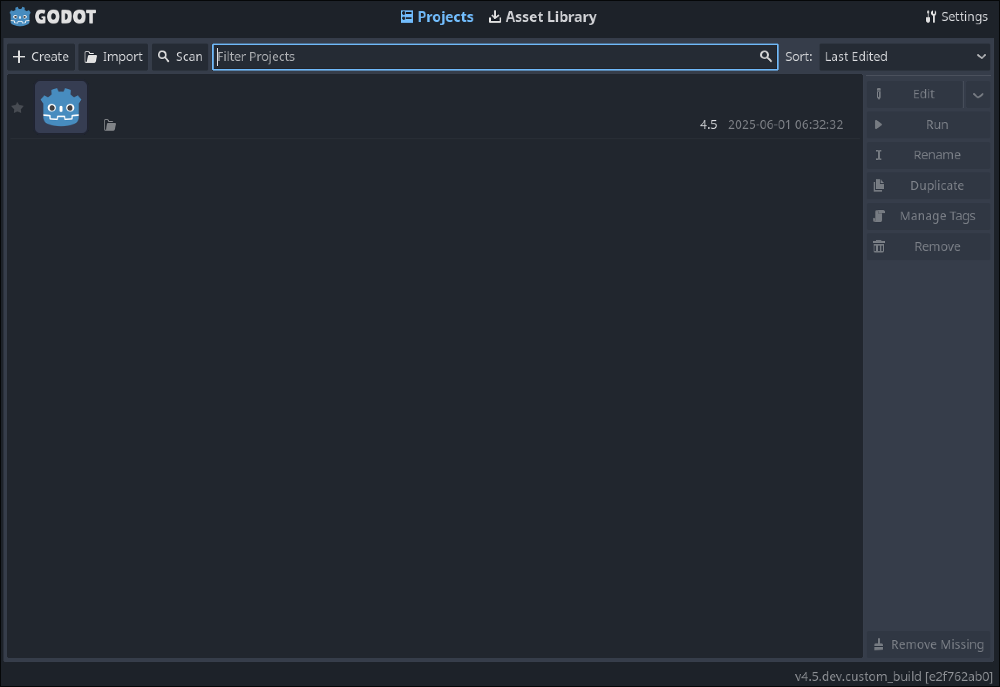

Mepeyew
https://github.com/davnotdev/mepeyew

Some renderings done with Mepeyew
I love modern graphics APIs, but I feel that most of them require you to jump through hoops that really only the professionals should handle.
For example, memory management, pipeline barriers, etc.
Mepeyew was a library I built out of necessity.
On one hand, I wanted the feel of a powerful low level API, but on the other hand, I didn't need the ability to fine tune every aspect of the rendering process.
Mepeyew implements a fairly simple rendering API supporting WebGPU (not WGPU) and Vulkan under the hood.
It is higher level than Vulkan but lower level than WGPU making it both lightweight and easy to use.
I implore you to read more on the Github page.
Given the speed at which WebGPU and the Rust ecosystem develops.
Mepeyew should still function fine, but its WebGPU backend and examples may be out of date.
(
winit, used in the examples, breaks its API very often for some reason)
Godot WebGPU Support
https://github.com/davnotdev/godot/tree/webgpu

These are images were rendered using the WIP WebGPU driver!
This is a work-in-progress project implementing an experimental WebGPU / WGPU driver for the Godot game engine.
Godot 4's fancy new renderer is quite a bit lower level than what WGPU is designed for.
With WGPU, many prerequisite features for rendering are missing, and the API morphs and evolves spontaneously.
So is WebGPU possible in Godot?
Right now, I would say yes!
The project has been able to weave and dodge previously insurmountable obstacles, with few obstacles remaining.
We'll see how things play out with time.
Once again, this is very much a developing project.
You can find more information by messaging me on the Godot Contributor's Chat.
spirv-webgpu-transform
https://github.com/davnotdev/spirv-webgpu-transform
This is an experimental little project that is developing alongside the Godot WebGPU project.
("Little" is an understatement, this library is CRUCIAL to project.)
WebGPU is infamous for not supporting certain common GLSL constructs.
Combined image samplers are the big one, among others.
This library edits SPIR-V coming from GLSL, splitting the texture and sampler.
That is one such transformation, and I expect many more to come especially as the WebGPU driver project moves towards web support.
(Sounds strange that a WebGPU driver does not support web, but this milestone is more difficult than it sounds.)
ROOM
https://github.com/davnotdev/ROOM
ROOM Published


Gameplay from ROOM, a 3D rasterized game for the SPRIG console.
Back in high school, there was an online community called Hack Club which made little homemade consoles called SPRIGs.
In order to get one, you had to make a game.
Being the graphics nerd I was and still am, I decided to make the first 3D rasterized SPRIG shooter game inspired by DOOM.
In ROOM, your goal is to navigate a maze of walls, picking up med kits while your health slowly drains.
All the while, you must evade and kill the spinning people who come to attack you.
The project features a custom 3D rasterizer with depth, culling, clipping, etc, but no shader support.
Being written in Typescript, you can play the game in the browser.
It obviously fails to run on actual hardware.
I made an attempt to port the game to Rust, but could not overcome the game's memory constraints.
These Rust port attempts eventually manifested into another game called Subway Sprigsters.